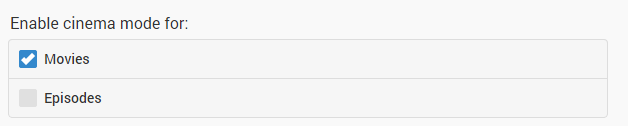
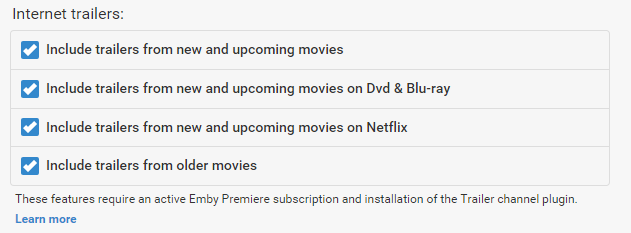
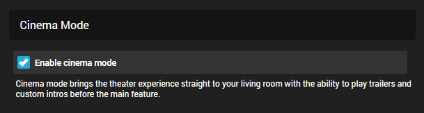

Kino-Intros
Kino-Intros bringen das Kinoerlebnis direkt ins Wohnzimmer, indem sie Trailer und benutzerdefinierte Intros vor dem Hauptfilm abspielen.
Kino-Intros werden im Server Dashboard konfiguriert, indem man zum Menü Kino-Intros navigiert. Standardmäßig ist es deaktiviert.
Auswahl, wann Kino-Intros aktiviert werden sollen
Die Konfigurationsseite ermöglicht die Auswahl der Videoarten, die Kino-Intros auslösen. Derzeit werden Filme und Episoden unterstützt. Ein Video wird als Film oder Episode bestimmt, basierend auf dem beim Erstellen der Bibliothek gewählten Inhaltstyp.

Internet-Trailer
Eine umfangreiche Bibliothek von Internet-Trailern steht für die Verwendung mit Kino-Intros zur Verfügung. Die verfügbaren Kategorien sind: Filme, die bald im Kino erscheinen, Filme, die bald auf DVD erscheinen, und Filme, die bald auf Netflix verfügbar sind.

Diese Funktion hat zwei Voraussetzungen:
- Ein aktives Emby Premiere-Abonnement
- Installation des Trailer-Plugins, entweder vor oder nach der Aktivierung der Kino-Intros.
Lokale Trailer
Wenn Ihre Filmordner lokale Trailer enthalten, ermöglicht die Aktivierung dieser Option, dass diese Trailer innerhalb der Kino-Intros verwendet werden. Siehe Trailer für weitere Informationen.

Benutzerdefinierte Intros
Darüber hinaus können Sie Ihre eigenen, benutzerdefinierten Videos für Kino-Intros angeben. Erstellen Sie einfach einen Ordner, der die Videos enthält, und geben Sie den Pfad im benutzerdefinierten Intro-Feld ein:
Wichtig: Führen Sie nach dem Hinzufügen neuer Intro-Dateien unbedingt einen Bibliotheksscan durch.
Codec-Intros
Codec-Intros ermöglichen es, Intros basierend auf den Medieninformationen des Hauptfilms, den Sie gerade ansehen, zu erstellen. Beispielsweise können Sie, wenn Sie einen Film mit AC3-Audio ansehen, ein AC3-Intro namens ac3.mp4 erstellen und dieses in Ihrem Codec-Intro-Pfad ablegen.
Folgende Felder werden zur Übereinstimmung verwendet:
- Video-Codec
- Audio-Codec
- Audio-Profil
- Tags
Hier einige Beispiele: (Die Erweiterung ist egal)
- Ein Film hat H264-Video, die Intro-Datei heißt "h264.mp4"
- Ein Film hat AC3-Audio, die Intro-Datei heißt "ac3.mkv"
- Ein Film hat EAC3-Audio, die Intro-Datei heißt eac3.mp4
- Ein Film hat DTS-HD MA-Audioprofil, die Intro-Datei heißt "dts-hd ma.avi"
- Sie haben einem Film den Tag "waffle" hinzugefügt, die Intro-Datei heißt "waffle.mpg".
Tip
Der Dateiname (vor der Erweiterung) sollte der gleiche sein wie der Codec-Name, der beim Betrachten eines Videos für entweder Audio-Codec oder Video-Codec angezeigt wird. Um die Medieninformationen eines Ihrer Videos zu überprüfen, besuchen Sie die Detailseite in der Web-App.
Erstellen Sie einfach einen Ordner, der die Videos enthält, und geben Sie den Pfad im Codec-Intro-Feld ein:
Important
Führen Sie nach dem Hinzufügen neuer Intro-Dateien unbedingt einen Bibliotheksscan durch.
Tip
Mit Hilfe benutzerdefinierter Intro-Verzeichnisse können Sie Tags für jeden Film/Episode wie "HomeMovies" verwenden. Diese Tags können mit dem MetaData Manager hinzugefügt werden.
Stellen Sie sicher, dass Intros, die den oben genannten benutzerdefinierten Verzeichnissen hinzugefügt werden, ordnungsgemäße Tags in den Dateien haben, bevor sie zu Emby hinzugefügt werden. Sie können Windows oder andere Tag-Editoren zur Unterstützung verwenden. Dies ermöglicht Emby, Ihr benutzerdefiniertes Intro für jeden Film anzuzeigen, der mit dem gleichen Namen getaggt ist.
Alterskontrolle
Die intelligente Alterskontrolle vergleicht die Bewertungen von Trailern mit der Bewertung des Films, der abgespielt wird, und filtert die Trailer basierend auf gleichwertigen oder niedrigeren Bewertungen. Zum Beispiel könnten Sie ein Erwachsener sein, der Die Goonies mit Ihren Kindern ansieht. Die Goonies ist mit PG bewertet, daher schließt diese Einstellung alle Trailer mit höheren Bewertungen als PG aus. Unbewertete Trailer werden ebenfalls ausgeschlossen.
Die ungesehene Einstellung verhindert, dass Trailer, die Sie bereits gesehen haben, erneut verwendet werden, sowie Trailer von Filmen, die Sie bereits gesehen haben. Beachten Sie, dass die Aktivierung dieser Einstellung möglicherweise dazu führt, dass schließlich keine ungesehenen Trailer mehr verfügbar sind.
Benutzerkontrolle
Sobald Sie Kino-Intros im Server Dashboard aktiviert haben, sind sie standardmäßig für alle Benutzer eingeschaltet. Jeder Benutzer kann sich individuell von den Kino-Intros abmelden, indem er sie in seinen Benutzereinstellungen deaktiviert.
Dies erreichen Sie, indem Sie auf das Benutzersymbol in der oberen rechten Ecke der Weboberfläche klicken und dann Präferenzen -> Wiedergabe auswählen.

Als Administrator können Sie diese Einstellung für einen Benutzer ändern, indem Sie diese Seite über das Server Dashboard -> Benutzer -> Benutzer auswählen -> Wiedergabeeinstellungen dieses Benutzers bearbeiten aufrufen.